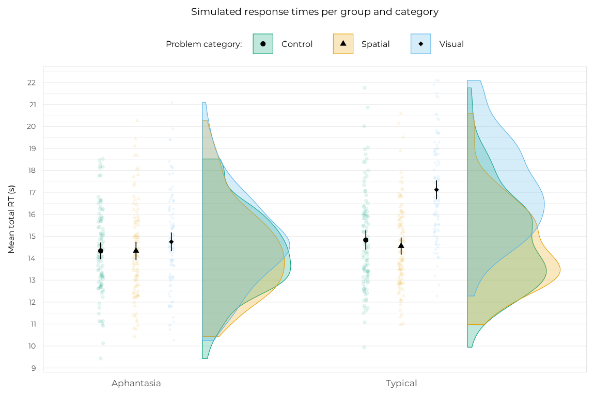
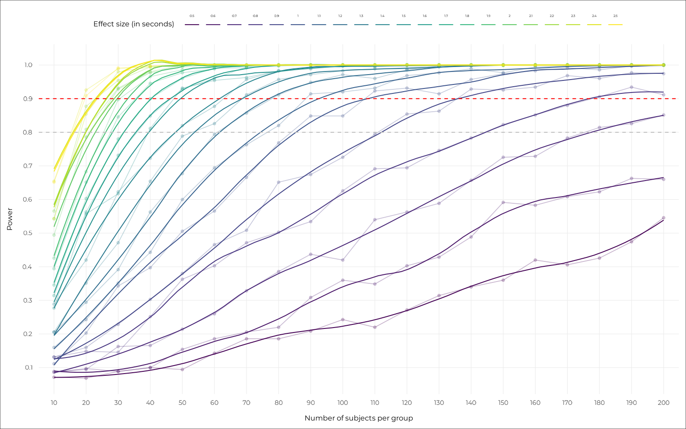

This vignette dives into the details of the power analysis by simulation that is briefly presented in the manuscript (preprint here). We describe the rationale behind this approach, how we built the generative model used to simulate data, how we fitted models on these simulations, and how we estimated the power of our model to detect the effect of interest.
Rationale
We analysed sample and effect sizes before data collection using a simulation approach, where power is defined as the proportion of simulations where a model detects an existing effect that we simulated. Instead of choosing a fixed sample size, this approach allowed us to have a full picture of the power of our model across a range of sample sizes and effect sizes. It replaced the question “What sample size do we need to detect an effect of a given (arbitrary) size?” with “Given the sample we managed to recruit, what is the smallest effect size we could detect with good power?” which allowed much more flexibility in data collection. This was especially useful for us because aphantasia and hyperphantasia are rare phenomena (see Wright et al., 2024), and we had no way of knowing beforehand how many participants we would be able to recruit in each group.
Building the generative model
The process starts with finding a way to generate synthetic data (said “simulations”) that “look like” the experimental data we expected to collect. We based our simulations on a model that we hypothesised to govern the effect of our variables of interest on the dependent variables, and distributional assumptions about these dependent variables. Below, we describe this model and the previous literature from which we derived the estimations of the effects and the distributions of the observed variables.
Structure
We designed our model before data collection based on our hypotheses and variables. This is the model that was be used as the data-generating process for the simulations. The model we used is a generalised linear mixed-effects model (GLMM) with the following structure, in R syntax:
dependent_variable ~ grouping * category + (category | id) + (grouping | problem) Where the dependent variable can be accuracy or response times (RTs).
The
groupingcan be our basic VVIQ groups (of varying precision depending on the definition, with 2, 3 or 4 groups), or OSIVQ cognitive style groups as proposed by Delem et al. (2025) (in aphantasia literature) or Gazzo et al. (2013) (in reasoning literature).The
categoryis the problem category (visual, spatial or control).The interaction between grouping and category is a third fixed factor (implied by the
*).The random effects are the intercepts and slopes by category for each participant (
category | id) and each problem by group (grouping | problem).
The parameters for each variable can be made explicit by writing the model formally as such:
Where:
- is the dependent variable (RTs or accuracy).
- is the global intercept (the mean of the dependent variable).
- is the random intercept for each participant (the variation of the global intercept per participant).
- is the fixed effect of the grouping variable (the difference in the dependent variable between the groups).
- is the random effect of the problem (the variation of the grouping effect per problem).
- is the fixed effect of the category variable (the difference in the dependent variable between the categories).
- is the random effect of the category (the variation of the category effect per participant).
- is the fixed effect of the interaction between the grouping and category variables (the difference in the dependent variable between the groups for each category).
- is the random effect of the interaction between the grouping and category variables (the variation of the interaction effect per participant).
- is the residual error (the variation of the dependent variable that is not explained by the model).
There are actually two , one for each category (minus one, for the reference level), and as many as there are combinations of categories and groups. In practice, for our purposes, we are only interested in the difference between the visual category and the others, that we called the coefficient, and the difference in this difference (the interaction) for a specific group (aphantasia), that we called the coefficient. Thus, for our simulations, we set , , (the effect of the spatial category) and (the associated slope) and all other interaction coefficients to 0, respectively because we had no hypothesis or previous data on the group effect, the difference between the problems, the spatial effect, or the variation in spatial performance.
Given this theoretical model and our assumptions, we tried to choose constant values for the remaining parameters that were not analysed (, and ) and ranges of values for the parameters of interest in our power analysis ( and ) based on previous literature.
Literature reference for parameter values
We based the power analysis on the Visual Imagery Impedance Effect (VIIE) on RTs, which were the most robust and well-documented we could find. More precisely, we used the very well-described data and model from Tse et al. (2017). They had a study and paradigm very similar to ours, so their statistics were fairly simple to adapt to determine good simulation parameters. The main difference is that they used continuous and discontinuous problems, while we used only semi-continuous problems, so we chose to average the values of the two types of problems from their study.
Their statistics were:
Control category mean RT: 14.641 seconds
Visual category mean RT: 16.388 seconds
Spatial category mean RT: 14.197 seconds
Their Generalized Estimating Equations also showed:
- An intercept of 12.051 seconds, 95% CI = [10.739, 13.363]
To which we can add the coefficient of the 4/5-terms (they are the same):
4T: 2.482 seconds, 95% CI = [1.607, 3.356]
Finally, the visual category : 2.633 seconds, 95% CI = [1.121, 4.146]
Thus, for our simulations, we aimed for the following parameters:
A global mean around 14.5 seconds.
Variations between 12.5 and 16.5 seconds, which we translated as varying intercepts per subject ranging between -2 and 2 seconds.
A fixed effect of the visual category around 2.6 seconds.
Variations in this fixed effect between 1.1 and 4.1 seconds, which we translated as varying slopes per subject ranging between -1.5 and 1.5 seconds.
Finding the simulation parameters
We hypothesised that the aphantasia group would not show a visual effect while the typical group would, a pattern that would result in an interaction between the visual category and the aphantasia group. The visual effect in the typical group would result in a positive coefficient, while the aforementioned interaction would result in a negative interaction coefficient that nullifies the visual effect for the aphantasia group only.
We chose to simulate the response times with a shifted log-normal
distribution (generated with the package brms), as these
distributions reproduce particularly well those of RTs (see this amazing interactive
illustration). We searched manually for the parameters of this
distribution and our model coefficients that allowed to reach the
desired statistics. The data simulation using the generative model is
wrapped in the simulate_rt_data() function. The function
has arguments to fine-tune all the distributional parameters and model
coefficients discussed above. We searched for the appropriate values by
trial-and-error using the simple code below:
library(aphantasiaReasoningViie)
#> Welcome to aphantasiaReasoningViie.
#> See https://osf.io/hfbcp/ for the associated study.
df_test <-
simulate_rt_data(
n_subj_per_group = 100,
# Parameters of the shifted log-normal distribution (from brms)
meanlog = 2.1,
sdlog = 0.55,
shift = 5,
# Varying intercept by-subject
tau_0 = 0.9,
# Visual category effect
beta_vis = 2.35,
# Varying visual effect by-subject
tau_vis = 0.75,
# Aphantasia group x visual interaction
beta_aph_vis = -2.35
)
df_test |>
dplyr::group_by(category, group) |>
dplyr::reframe(
mean = mean(rt_total),
median = median(rt_total),
min = min(rt_total), # To test the shift
max = max(rt_total) # To test the sdlog dispersion effect
)
#> # A tibble: 6 × 6
#> category group mean median min max
#> <fct> <fct> <dbl> <dbl> <dbl> <dbl>
#> 1 Control Aphantasia 14.3 13.3 5.53 48.9
#> 2 Control Typical 14.8 13.5 5.11 60.4
#> 3 Spatial Aphantasia 14.3 13.2 5.22 41.6
#> 4 Spatial Typical 14.6 13.3 5.85 50.1
#> 5 Visual Aphantasia 14.7 13.4 4.42 51.7
#> 6 Visual Typical 17.1 15.8 8.21 64.6Using the argument values above, we see that we managed to reach statistics close to the ones we wanted, while simulating an interaction effect between the groups in the visual category. We found that:
A mean of 2.1, SD of 0.55 seconds and a shift (non-decision time) of 5 seconds on the shifted log-normal distribution allowed to reach the desired of 14.5 seconds reliably (testing with no other source of variation, i.e., all other parameters at 0).
A varying intercept with a SD of 0.9 allowed to obtain distributions of the varying RTs ranging between -2 and 2 seconds on average, as expected.
A visual effect of 2.35 allowed to reproduce the visual category means observed in the study reliably.
A varying visual effect with a SD of 0.75 allowed to obtain distributions of the varying visual RTs ranging between -1.5 and 1.5 seconds on average, as expected.
An interaction parameter set as minus the visual effect allowed to nullify the visual effect in the aphantasia group. If the effect size gets small, a slight multiplier (e.g., 1.5) might be necessary to nullify the effect.
We can visualise the distribution of these RTs using the
plot_superb_raincloud() function from the package, which
wraps functions from the ggplot2 and superb packages
to create nice visualisations easily:
library(superb)
plot_superb_raincloud(
df_test, rt_total, group,
title = "Simulated response times per group and category",
y_title = "Mean total RT (s)",
base_size = 12,
plot.background = ggplot2::element_rect(fill = "white"),
axis_rel_x = 1.2,
exp_add_right = 0.7
)
The slowdown in the visual category for the typical group appears very clearly. Now the whole purpose of the power analyses will be to play around with this RT difference to see how well and how often our model is able to detect it.
All set! Now we can move on to the actual power analysis.
Fitting models on a lot of simulations
Modelling and testing the contrast of interest
For our final analyses, we fitted frequentist GLMMs with Gamma
distributions using the glmmTMB package. For the sake of
computation speed, and because we did not simulate any variance tied to
the problem types, we simplified the formula for the power analyses by
removing the second random term. Note the use of the
set_ranef_prior() helper function, which helps setting
regularizing priors on the random effects’ SD to alleviate convergence
issues.
Let’s see how this model performs on our test data. We’ll use the
report_contrast() function from the package to get the
contrasts of interest easily.
model <-
glmmTMB::glmmTMB(
rt_total ~ group * category + (category | id),
data = df_test,
family = Gamma(link = "identity"),
prior = set_ranef_prior(70)
)
report_contrast(model, ~ category | group) |> knitr::kable()| Contrast | Group | Difference | 95% CI | p.value |
|---|---|---|---|---|
| Control - Spatial | Aphantasia | 0.034 | [-0.56, 0.63] | 0.990 |
| Control - Visual | Aphantasia | -0.352 | [-0.89, 0.19] | 0.278 |
| Spatial - Visual | Aphantasia | -0.386 | [-0.98, 0.21] | 0.277 |
| Control - Spatial | Typical | 0.241 | [-0.36, 0.84] | 0.618 |
| Control - Visual | Typical | -2.311 | [-2.9, -1.72] | 0.000 |
| Spatial - Visual | Typical | -2.552 | [-3.19, -1.91] | 0.000 |
We see that the model managed to detect the visual effect in the typical group, and also does a pretty decent estimation of its value (we simulated a 2.35s effect, with some random variance added). How about the interaction contrasts?
report_contrast(model, ~ group * category, interaction = TRUE) |> knitr::kable()| Group contrast | Category contrast | Difference | 95% CI | p.value |
|---|---|---|---|---|
| Aphantasia - Typical | Control - Spatial | -0.207 | [-0.91, 0.5] | 0.566 |
| Aphantasia - Typical | Control - Visual | 1.960 | [1.29, 2.63] | 0.000 |
| Aphantasia - Typical | Spatial - Visual | 2.166 | [1.44, 2.89] | 0.000 |
As expected, the interaction is also detected, and its value reflects the difference in the visual effect between the groups.
We used the p-value of the Control-Visual interaction contrast as the criterion to determine whether the model was successful or not in detecting the effect. Thus, a single loop of the power analysis looks like this:
# Choose sample and effect sizes to test
n_subj_per_group <- 40
beta_vis <- 1
# Simulate data
df <-
simulate_rt_data(
n_subj_per_group = n_subj_per_group,
beta_vis = beta_vis, # Visual category effect
beta_aph_vis = -1 * beta_vis, # group x visual interaction
seed = 1234
)
# Fit the model on the simulated data
model <-
glmmTMB::glmmTMB(
rt_total ~ group * category + (category | id),
data = df,
family = Gamma(link = "identity"),
prior = set_ranef_prior()
) |> suppressMessages() |> suppressWarnings()
# Get the p-value of the control-visual interaction contrast
contrasts <- report_contrast(model, ~ group * category, interaction = TRUE)
p <- contrasts$p.value[2]
print(p)
#> [1] 0.017We wrapped this loop in the simulate_rt_test()
function:
simulate_rt_test(n_subj_per_group = 40, beta_vis = 1, seed = 1234)
#> [1] 0.017Now time for power! run_power_analysis() takes a range
of sample sizes, a range of effect sizes
(),
and a number of simulations per sample/effect size combination. It then
runs the simulate_rt_test() function on all these
combinations, and returns the results of the power analysis. This
function is interactive (it gives info on what’s going to be computed
and waits for user input) so it does not run in this notebook, but feel
free to try it out!
This is the code that was used to run the power analysis that is presented in the manuscript:
power_results <-
run_power_analysis(
n_min = 10,
n_max = 200,
n_step = 10,
beta_vis_min = 0.5,
beta_vis_max = 2.5,
beta_step = 0.1,
n_simulations = 350
)… This is a total of 147,000 models fitted! It took 16 hours and 44
minutes (although the time can vary a lot depending on the computer), so
of course we saved the results to a file for later use. These results
are provided as package data in the power_results dataset,
so they can be accessed easily:
power_results |>
dplyr::group_by(n_subj_per_group, beta_vis) |>
dplyr::reframe(power = sum(p_value <= 0.05) / dplyr::n())
#> # A tibble: 420 × 3
#> n_subj_per_group beta_vis power
#> <dbl> <dbl> <dbl>
#> 1 10 0.5 0.0714
#> 2 10 0.6 0.0857
#> 3 10 0.7 0.0886
#> 4 10 0.8 0.131
#> 5 10 0.9 0.131
#> 6 10 1 0.111
#> 7 10 1.1 0.16
#> 8 10 1.2 0.206
#> 9 10 1.3 0.206
#> 10 10 1.4 0.289
#> # ℹ 410 more rowsThe table above shows the estimated power for each combination of
sample size and effect size. The package also provides a
plot_power() function to visualise these results with nice
curves:
plot_power(
power_results,
base_size = 12,
plot.background = ggplot2::element_rect(fill = "white")
)
Conclusion
Mission accomplished! The power analysis by simulation allowed us to have a full picture of the power of our model across a range of sample sizes and effect sizes. It made the interpretation of the results of our analyses on real data much easier and gave straightforward directions on the way to go to gather evidence in favour or against the existence of the VIIE.
#> ─ Session info ───────────────────────────────────────────────────────────────
#> setting value
#> version R version 4.5.2 (2025-10-31)
#> os Ubuntu 24.04.3 LTS
#> system x86_64, linux-gnu
#> ui X11
#> language en
#> collate C.UTF-8
#> ctype C.UTF-8
#> tz UTC
#> date 2025-11-19
#> pandoc 3.1.11 @ /opt/hostedtoolcache/pandoc/3.1.11/x64/ (via rmarkdown)
#> quarto 1.8.26 @ /usr/local/bin/quarto
#>
#> ─ Packages ───────────────────────────────────────────────────────────────────
#> ! package * version date (UTC) lib source
#> abind 1.4-8 2024-09-12 [1] RSPM
#> aphantasiaReasoningViie * 1.0 2025-11-19 [1] local
#> backports 1.5.0 2024-05-23 [1] RSPM
#> bayesplot 1.14.0 2025-08-31 [1] RSPM
#> P boot 1.3-32 2025-08-29 [?] CRAN (R 4.5.2)
#> bridgesampling 1.1-2 2021-04-16 [1] RSPM
#> brms 2.23.0 2025-09-09 [1] RSPM
#> Brobdingnag 1.2-9 2022-10-19 [1] RSPM
#> bslib 0.9.0 2025-01-30 [1] RSPM
#> cachem 1.1.0 2024-05-16 [1] RSPM
#> checkmate 2.3.3 2025-08-18 [1] RSPM
#> cli 3.6.5 2025-04-23 [1] RSPM
#> coda 0.19-4.1 2024-01-31 [1] RSPM
#> crayon 1.5.3 2024-06-20 [1] RSPM
#> curl 7.0.0 2025-08-19 [1] RSPM
#> desc 1.4.3 2023-12-10 [1] RSPM
#> P devtools * 2.4.6 2025-10-03 [?] RSPM
#> digest 0.6.38 2025-11-12 [1] RSPM
#> distributional 0.5.0 2024-09-17 [1] RSPM
#> dplyr 1.1.4 2023-11-17 [1] RSPM
#> P ellipsis 0.3.2 2021-04-29 [?] RSPM
#> emmeans 2.0.0 2025-10-29 [1] RSPM
#> estimability 1.5.1 2024-05-12 [1] RSPM
#> evaluate 1.0.5 2025-08-27 [1] RSPM
#> farver 2.1.2 2024-05-13 [1] RSPM
#> fastmap 1.2.0 2024-05-15 [1] RSPM
#> faux 1.2.3 2025-10-01 [1] RSPM
#> P foreign 0.8-90 2025-03-31 [?] CRAN (R 4.5.2)
#> fs 1.6.6 2025-04-12 [1] RSPM
#> generics 0.1.4 2025-05-09 [1] RSPM
#> ggplot2 4.0.1 2025-11-14 [1] RSPM
#> glmmTMB 1.1.13 2025-10-09 [1] RSPM
#> glue 1.8.0 2024-09-30 [1] RSPM
#> gtable 0.3.6 2024-10-25 [1] RSPM
#> htmltools 0.5.8.1 2024-04-04 [1] RSPM
#> htmlwidgets 1.6.4 2023-12-06 [1] RSPM
#> httpuv 1.6.16 2025-04-16 [1] RSPM
#> jquerylib 0.1.4 2021-04-26 [1] RSPM
#> jsonlite 2.0.0 2025-03-27 [1] RSPM
#> knitr 1.50 2025-03-16 [1] RSPM
#> later 1.4.4 2025-08-27 [1] RSPM
#> P lattice 0.22-7 2025-04-02 [?] CRAN (R 4.5.2)
#> lifecycle 1.0.4 2023-11-07 [1] RSPM
#> lme4 1.1-37 2025-03-26 [1] RSPM
#> loo 2.8.0 2024-07-03 [1] RSPM
#> lsr 0.5.2 2021-12-01 [1] RSPM
#> magrittr 2.0.4 2025-09-12 [1] RSPM
#> P MASS 7.3-65 2025-02-28 [?] CRAN (R 4.5.2)
#> P Matrix 1.7-4 2025-08-28 [?] CRAN (R 4.5.2)
#> matrixStats 1.5.0 2025-01-07 [1] RSPM
#> memoise 2.0.1 2021-11-26 [1] RSPM
#> P mgcv 1.9-3 2025-04-04 [?] CRAN (R 4.5.2)
#> mime 0.13 2025-03-17 [1] RSPM
#> minqa 1.2.8 2024-08-17 [1] RSPM
#> mvtnorm 1.3-3 2025-01-10 [1] RSPM
#> P nlme 3.1-168 2025-03-31 [?] CRAN (R 4.5.2)
#> nloptr 2.2.1 2025-03-17 [1] RSPM
#> numDeriv 2016.8-1.1 2019-06-06 [1] RSPM
#> otel 0.2.0 2025-08-29 [1] RSPM
#> pillar 1.11.1 2025-09-17 [1] RSPM
#> pkgbuild 1.4.8 2025-05-26 [1] RSPM
#> pkgconfig 2.0.3 2019-09-22 [1] RSPM
#> pkgdown 2.2.0 2025-11-06 [1] any (@2.2.0)
#> pkgload 1.4.1 2025-09-23 [1] RSPM
#> plyr 1.8.9 2023-10-02 [1] RSPM
#> posterior 1.6.1 2025-02-27 [1] RSPM
#> progressr 0.18.0 2025-11-06 [1] RSPM
#> promises 1.5.0 2025-11-01 [1] RSPM
#> purrr 1.2.0 2025-11-04 [1] RSPM
#> R6 2.6.1 2025-02-15 [1] RSPM
#> ragg 1.5.0 2025-09-02 [1] RSPM
#> rbibutils 2.4 2025-11-07 [1] RSPM
#> RColorBrewer 1.1-3 2022-04-03 [1] RSPM
#> Rcpp 1.1.0 2025-07-02 [1] RSPM
#> RcppParallel 5.1.11-1 2025-08-27 [1] RSPM
#> Rdpack 2.6.4 2025-04-09 [1] RSPM
#> reformulas 0.4.2 2025-10-28 [1] RSPM
#> P remotes 2.5.0 2024-03-17 [?] RSPM
#> renv 1.1.4 2025-03-20 [1] RSPM (R 4.5.0)
#> reshape2 1.4.5 2025-11-12 [1] RSPM
#> rlang 1.1.6 2025-04-11 [1] RSPM
#> rmarkdown 2.30 2025-09-28 [1] RSPM
#> rrapply 1.2.7 2024-06-26 [1] RSPM
#> rstantools 2.5.0 2025-09-01 [1] RSPM
#> S7 0.2.1 2025-11-14 [1] RSPM
#> sandwich 3.1-1 2024-09-15 [1] RSPM
#> sass 0.4.10 2025-04-11 [1] RSPM
#> scales 1.4.0 2025-04-24 [1] RSPM
#> sessioninfo 1.2.3 2025-02-05 [1] RSPM
#> shiny 1.11.1 2025-07-03 [1] RSPM
#> shinyBS 0.61.1 2022-04-17 [1] RSPM
#> showtext 0.9-7 2024-03-02 [1] RSPM
#> showtextdb 3.0 2020-06-04 [1] RSPM
#> stringi 1.8.7 2025-03-27 [1] RSPM
#> stringr 1.6.0 2025-11-04 [1] RSPM
#> superb * 1.0.0 2025-08-18 [1] RSPM
#> sysfonts 0.8.9 2024-03-02 [1] RSPM
#> systemfonts 1.3.1 2025-10-01 [1] RSPM
#> tensorA 0.36.2.1 2023-12-13 [1] RSPM
#> textshaping 1.0.4 2025-10-10 [1] RSPM
#> tibble 3.3.0 2025-06-08 [1] RSPM
#> tidyr 1.3.1 2024-01-24 [1] RSPM
#> tidyselect 1.2.1 2024-03-11 [1] RSPM
#> TMB 1.9.18 2025-10-13 [1] RSPM
#> P usethis * 3.2.1 2025-09-06 [?] RSPM
#> utf8 1.2.6 2025-06-08 [1] RSPM
#> vctrs 0.6.5 2023-12-01 [1] RSPM
#> viridisLite 0.4.2 2023-05-02 [1] RSPM
#> withr 3.0.2 2024-10-28 [1] RSPM
#> xfun 0.54 2025-10-30 [1] RSPM
#> xtable 1.8-4 2019-04-21 [1] RSPM
#> yaml 2.3.10 2024-07-26 [1] RSPM
#> zoo 1.8-14 2025-04-10 [1] RSPM
#>
#> [1] /home/runner/.cache/R/renv/library/aphantasiaReasoningViie-b75da44b/linux-ubuntu-noble/R-4.5/x86_64-pc-linux-gnu
#> [2] /home/runner/.cache/R/renv/sandbox/linux-ubuntu-noble/R-4.5/x86_64-pc-linux-gnu/8f3cef43
#>
#> * ── Packages attached to the search path.
#> P ── Loaded and on-disk path mismatch.
#>
#> ──────────────────────────────────────────────────────────────────────────────